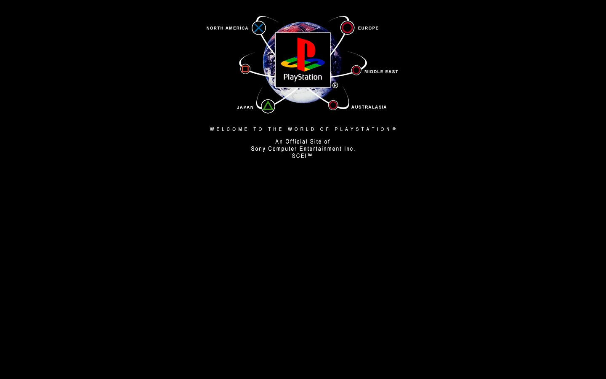

References / Website / 300
PlayStation website, 2000
Sony’s PlayStation region-choice page of October 2000: the logo on a globe inside orbit rings, with region names in spaced capitals on black.
- Source
- www.playstation.com (archived copy)
- Creator
- Sony Computer Entertainment
- Made
- 2000 (capture date, 27 October 2000)
- Style
- Y2K aesthetic (agent-proposed, not yet reviewed by a person)
- Moods
- Futuristic, cosmic, minimal
- Evidence
- Captured from the Internet Archive with
tools/capture.mjs(headless Chrome, 1440 × 900) on 28 September 2026 and inspected. Nothing covers the page. It is a short region-choice page; most of the viewport is black. - Reviewed
- Rights
- Third-party work, stored with credit for commentary. License: unverified. Rights policy
Observed
- A photograph of the Earth sits at the top center of a black page, with the PlayStation logo in a white-edged square over it.
- White orbit rings curve around the globe. Their ends carry the four controller symbols (cross, circle, square, triangle) in blue, red, and green circles.
- Region names such as “NORTH AMERICA”, “EUROPE”, “JAPAN”, and “AUSTRALASIA” are in small white bold capitals next to the symbols.
- “WELCOME TO THE WORLD OF PLAYSTATION®” runs below in small capitals with very wide letter spacing.
Why it belongs
The orbit ring is one of the style’s image motifs. Here it turns a region chooser into a small solar system.
The widely spaced capitals are drawn as images, so the measured letter spacing and uppercase share are 0.
Borrow
Arrange a few choices on orbit rings around a central logo.
Set one welcome line in small capitals with very wide letter spacing.
Measured
Machine-extracted by tools/extract-traits.js on . Full measurement.
- Median radius
- null px
- Mean chroma
- 0
- Palette
- #000000 100%

